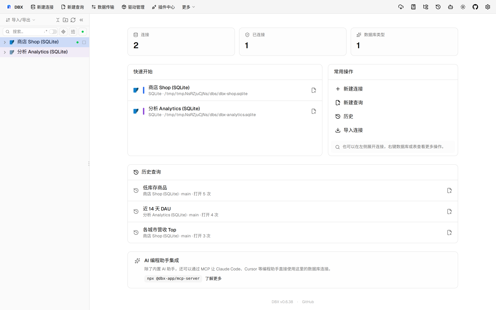
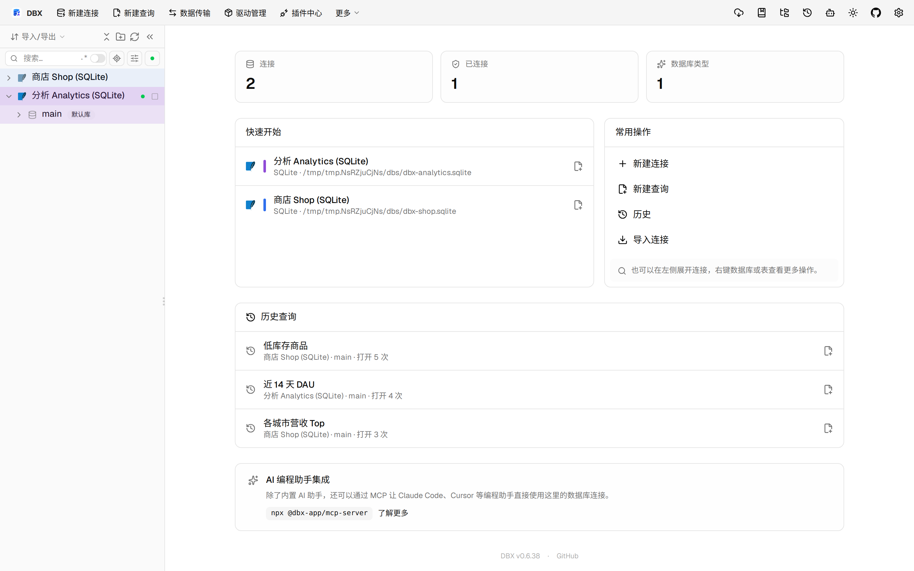

#11543 界面预览
commit ce04034 · 回到 PR · 这个 PR 为 OceanBase Oracle 增加了对象列表的分页加载与搜索分页支持，隐藏了部分不适用的排序/筛选交互，并在表信息面板里把行数与空间统计拆成更细的 OceanBase 专用来源、Leader 口径、索引和 LOB 分项显示。
⚠️ 这次录制有 8 步没能按计划执行；带 ⚠️ 的截图拍摄于步骤失败之后，画面未必是说明文字所描述的状态。
红线是鼠标走过的轨迹，红色圆环是一次点击；底部文字是这一步在做什么。多个场景各自从应用初始状态开始。空格暂停，← → 逐段查看。

⚠️ OceanBase 对象列表分页 · 商店连接展开后的对象树
⚠️ OceanBase 对象列表分页 · 分析连接展开后的对象树
 ⚠️ OceanBase 对象列表分页 · 这里是 OceanBase Oracle 对象列表分页与加载更多按钮会出现的位置
⚠️ OceanBase 对象列表分页 · 这里是 OceanBase Oracle 对象列表分页与加载更多按钮会出现的位置
 ⚠️ 表信息里的 OceanBase 行数与空间统计 · 事件表打开后的数据网格
⚠️ 表信息里的 OceanBase 行数与空间统计 · 事件表打开后的数据网格

⚠️ 表信息里的 OceanBase 行数与空间统计 · 表信息面板中的统计区域
 ⚠️ 表信息里的 OceanBase 行数与空间统计 · 这里是 OceanBase Oracle 会显示行数来源、Leader 口径、已分配空间、索引和 LOB 分项的表信息位置
⚠️ 表信息里的 OceanBase 行数与空间统计 · 这里是 OceanBase Oracle 会显示行数来源、Leader 口径、已分配空间、索引和 LOB 分项的表信息位置